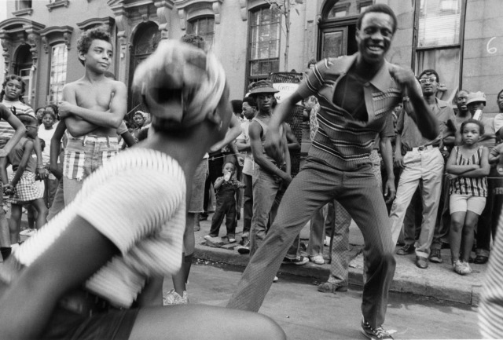
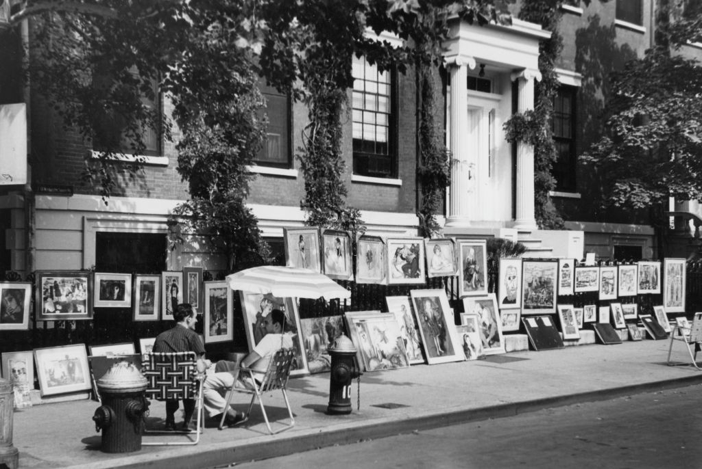

Pork store on Amsterdam Ave between 144th and 145th Streets, 1971
Stickball in the El Barrio
NYC 1970
PHOTO: Camilo José Vergara
Pork store on Amsterdam Ave between 144th and 145th Streets, 1971
Life in the Village, 1976
Stickball in the El Barrio
NYC 1970
PHOTO: Camilo José Vergara
Subway riders in 1976

Fire in Brooklyn, 1977
NYC street fashion, Times Square 1975
Photographed by Kenneth Siegel

Jake and Elwood
 Harlem. Block Party, 1973
Phot:. Chester Higgins

40k! Hey, thanks everybody! Glad you’re enjoying the ride with me!

2 train, 1979.

Soho in the late 70s

86th Street crosstown bus at 5th Ave, 1969

E. 173rd in the Bronx, circa 1980
Earth Day, 1970, 14th Street
Hot and horny lusty nymphs

Dude about to punch the camera

Times Square sure has changed

Students outside IS44 on 77th Street, 1969
Subway life, or a horror movie?

The Admiral of the subway

Two men sit on the sidewalk as they display an assortment of paintings during the semi-annual Washington Square Outdoor Art Exhibit, New York, September 1963. Photographed by Fred W. McDarrah.